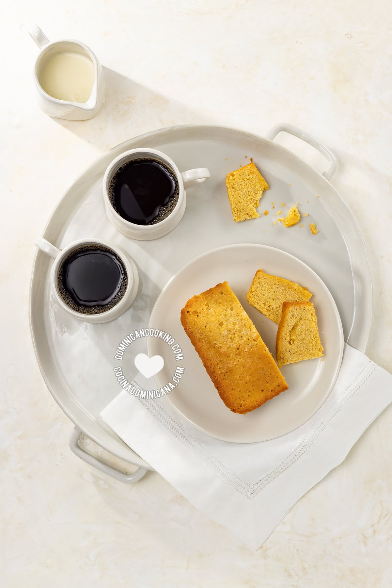

Dominican Cornbread

Description
Pan de maiz (cornbread in Spanish) is a dense cake-like cornbread made with cornmeal, that can be served with
cocoa as a snack or as dessert. It is very popular in the Dominican Republic, and for an excellent reason.
The biggest confusion about this straightforward cornbread recipe is about cornmeal, and what it is. Cornmeal is
finely-ground dry corn (maize). Cornmeal is called harina de maiz in Spanish, a not quite literal translation.
On top of that if you study the supermarket aisle you will find several products labeled "cornmeal", and they
don't all look the same.
ingredients
- 1 cup cornmeal
- ½ cup brown sugar
- 1 tablespoon cornstarch
- ½ teaspoons salt
- 1 teaspoons cinnamon powder
Steps
- Preheat the oven to 300ºF (150ºC).
Mix cornmeal, sugar, cornstarch, salt, and cinnamon.
- Pour in milk and mix. Let it rest for an hour in the fridge (this is an optional step, but I have found it
results in much nicer texture).
- Add the baking powder to the cornmeal mixture, followed by eggs, raisins and butter.
Mix all the ingredients by hand or mixer until all the ingredients have been incorporated (don't worry that
the batter is on the runny side, it's okay). Pour the batter into the baking mold.
- Bake in preheated oven for 35 minutes or until you insert a toothpick and it comes out clean. Cool before
removing from the pan.